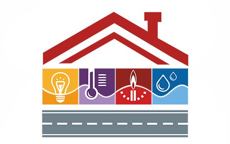
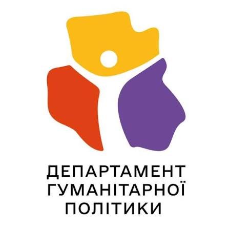
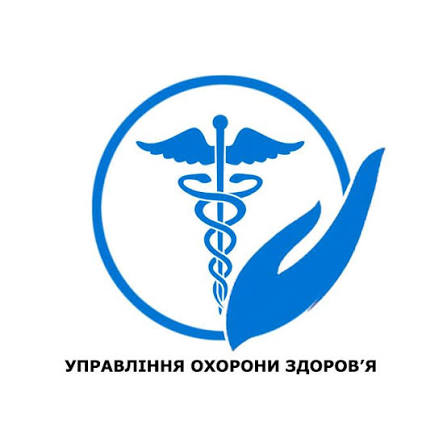
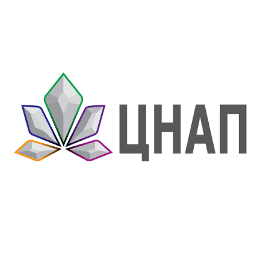

1. Житлово-комунальне господарство та благоустрій

Обслуговування прибудинкових територій, капітальний ремонт доріг та озеленення скверів.
Взаємодія: Департамент житлово-комунальної інфраструктури КМДА.


Обслуговування прибудинкових територій, капітальний ремонт доріг та озеленення скверів.
Взаємодія: Департамент житлово-комунальної інфраструктури КМДА.
Надання субсидій, допомога пільговим категоріям громадян та внутрішньо переміщеним особам.
Взаємодія: Міністерство соціальної політики України.

Координація роботи закладів дошкільної та загальної середньої освіти району.
Взаємодія: Міністерство освіти і науки України.

Підтримка роботи районних консультативно-діагностичних центрів та амбулаторій.
Взаємодія: МОЗ України.

Забезпечення швидкого та якісного оформлення документів для мешканців району.
Взаємодія: Міністерство цифрової трансформації України.